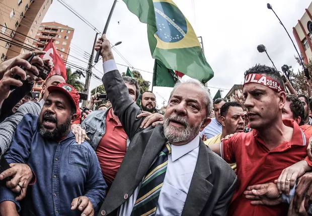
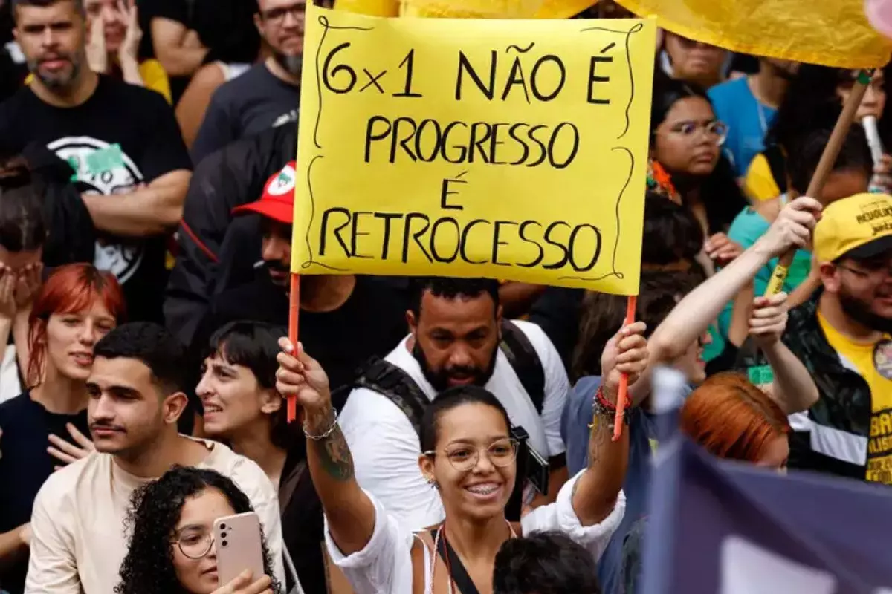

O presidente Luiz Inácio Lula da Silva afirmou que pretende disputar novamente a Presidência da República nas eleições de 2026. A declaração foi feita durante uma viagem oficial à Indonésia, onde o presidente comentou sobre seus planos políticos para o futuro. Segundo Lula, ele se sente preparado para concorrer a um novo mandato, mesmo próximo de completar 80 anos. O presidente afirmou estar com “a mesma energia de quando tinha 30 anos” e disse que pretende disputar um quarto mandato presidencial no Brasil. As eleições gerais brasileiras estão previstas para ocorrer em outubro de 2026, quando os eleitores escolherão presidente, governadores, senadores e deputados. Caso confirme oficialmente sua candidatura e seja eleito novamente, Lula poderá ampliar seu tempo no comando do país e iniciar mais um mandato à frente do governo federal.

Em 2026, um dos temas que passou a ganhar destaque no cenário político brasileiro foi a discussão sobre mudanças na jornada de trabalho. O governo do presidente Luiz Inácio Lula da Silva iniciou conversas sobre a possibilidade de rever a chamada escala 6x1, modelo em que o trabalhador atua seis dias e descansa apenas um. A proposta é abrir negociações entre representantes do governo, empresas e trabalhadores para avaliar alternativas que possam melhorar as condições de trabalho sem prejudicar a economia. O debate ainda está em fase inicial, mas já mobiliza sindicatos, empresários e parlamentares no Congresso Nacional, tornando-se um dos assuntos trabalhistas mais discutidos do ano.

O presidente dos Estados Unidos, Donald Trump, afirmou em 2026 que seu governo avalia classificar facções criminosas brasileiras como organizações terroristas internacionais. A declaração foi feita durante uma entrevista em que Trump comentou sobre o combate ao crime organizado nas Américas. Segundo ele, grupos como o Primeiro Comando da Capital e o Comando Vermelho representam uma ameaça não apenas ao Brasil, mas também à segurança regional, devido ao envolvimento com tráfico de drogas e redes internacionais de crime. A possível classificação permitiria aos Estados Unidos aplicar sanções mais duras contra membros dessas organizações e ampliar a cooperação com autoridades brasileiras no combate ao crime organizado. Até o momento, autoridades do governo brasileiro ainda não comentaram oficialmente a proposta, que pode gerar debate diplomático entre Brasil e Estados Unidos.


Deixe seu comentário!
Comentários Recentes (5)
Bolsonabo • Há 2 horas
No tocante a essa eleição de 2026 aí, a gente tem que ver essa cuestão, tá ok? Estão querendo inventar moda com esse negócio de escala 6x1. Pelo menos o jornal de vocês não é fakenews igual os outros. Um forte abraço hétero!
Lulo • Há 5 horas
Veja bem, companheiro... Nunca na história desse país a gente viu uma cobertura jornalística tão bonita. A economia tá crescendo 2,3%, mas o que o trabalhador quer mesmo saber é quando a picanha e a cervejinha vão cair de preço no final de semana, não é verdade?
ET de Varginha • Há 2 dias
Muito boa a matéria. Alguém sabe me dizer se a escala 6x1 se aplica a viagens intergalácticas? Meu disco voador tá na oficina.
Agostinho Carrara • Há 1 hora
Esse negócio da economia crescer 2,3% é bom, mas o preço da gasolina pra rodar no táxi ainda tá quebrando minhas pernas, Bebel!
Julius Rock • Há 10 minutos
Achei a assinatura do jornal meio cara. Se eu não assinar nada, o desconto é maior!